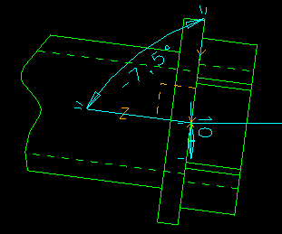

| Next Page | Previous Page | First Page |
Import the IGES file of the design data from the Customer.
File, Import, IGES, "Design_Space.igs",
Stitch OFF, Import, Import, Dismiss
"Getting data from the customer
to define the design space. Could be through standard translators
(IGES, etc) or via Multi-Site Data Sharing, in this case via IGES."

Rename the new part to Design Space

Add a Coordinate System to the workbench part and name it Filter Connector (in Main Bin)
"Start to define the new Filter Connector part, we need some datums whose locations are defined by the customers data."


Add another Coordinate System relative to the first, use the in-line measuring tool and measure the correct distance. This will automatically become the default values.
Coordinate System, pick first system,
Translate, Measure, <Done>, <Done>, <Done>

Add another Coordinate System relative to the first, use the in-line measuring tool and measure the correct distance. This will automatically become the default values. Make sure you add the -7.5 angle NOW.
Coordinate System, pick first system, Translate, Measure, <Done>, -7.5,0,0 <Done> <Done>